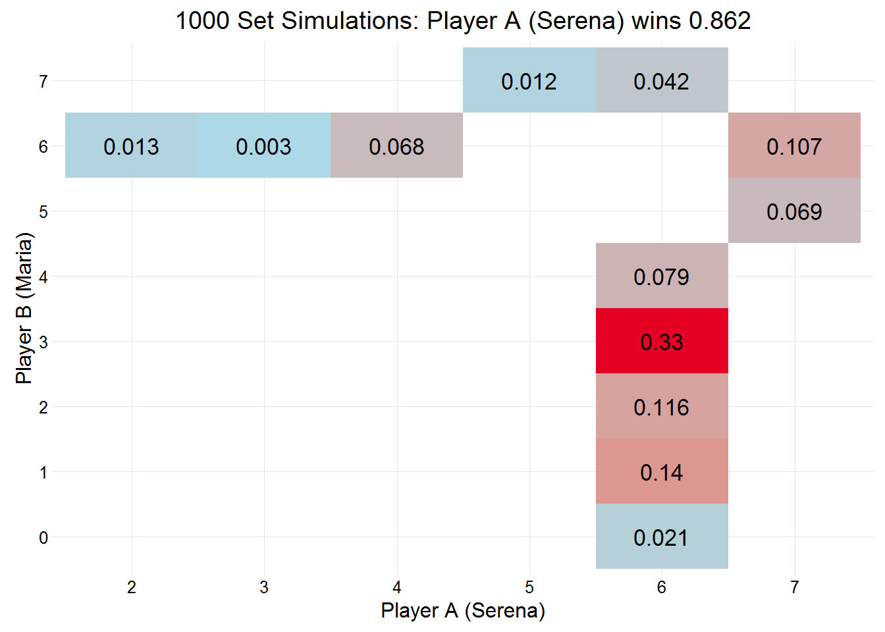
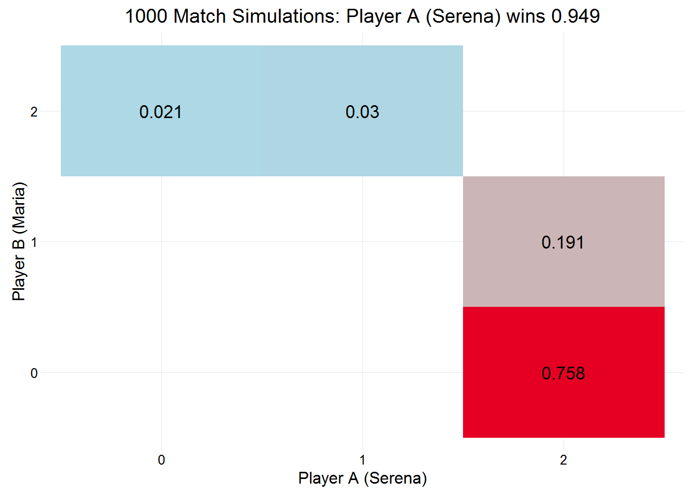

servevolleyR
Wimbledon 2015
Williams vs Sharapova
Today sees Serena Williams take on Maria Sharapova in the semi-final of Wimbledon 2015. This post will walk through an example use of the package using this match-up.
First make sure the package is installed and loaded:
# devtools::install_github("durtal/servevolleyR")
library(servevolleyR)What servevolleyR requires is a probability that a player will win the point on their first serve. For this quick example, we’ll use the players performance in their last matches. Williams defeated her sister, Venus, in two sets, with some summary statistics shown in the picture below left, while Sharapova beat Vandeweghe in three sets, with some summary statistics shown in the picture below right.

The stats show that Serena won 80% of points on her first serve, while Sharapova won 73%. These two numbers, while very simple can be used to simulate a game, set, tiebreak, and match between the two. However additional parameters can also be provided, namely, the probability that a player will win a point on their second serve, and the probability that the players first serve will be in. These can also be seen in the pictures above. So for the two players (Maria’s second serve was woeful!):
williams1 <- 0.80 # serena first serve win %
williams2 <- 0.58 # serena second serve win %
williamsIn <- 0.65 # serena first serve in %
sharapova1 <- 0.73 # maria first serve win %
sharapova2 <- 0.36 # maria second serve win %
sharapovaIn <- 0.6 # maria first serve in %We can then use these parameters in the following functions included in servevolleyR, simGame, simGames, simSet, simSets, simTiebreak, simMatch and simMatches.
simGame and simGames
simGame simulates a single service game given a number of parameters, the only one required is the probability that a player wins a point on their first serve, williams1 and sharapova1 above, but additional parameters can also be provided. To simulate many service games, there are two options, the first, probably quicker is to use simGame inside replicate, we’ll look at Serena for this example, the second is to use simGames.
Williams service games
Using simGame and replicate
williamsServe <- replicate(1e3, simGame(p = williams1,
p2 = williams2,
firstServe = williamsIn))williamsServe is a vector of 1000 service game results, 1 when the server (Serena) wins, and 0 when the returner wins, the first 6 results are 1, 1, 1, 1, 1, 1. This vector can be summarised as follows.
table(williamsServe) / sum(table(williamsServe))## williamsServe
## 0 1
## 0.078 0.922The simulation estimates that Serena will win 0.922 of her service games.
simSet and simSets
simSet simulates a single set given a number of parameters for two players, the only two required is the probability that each player wins a point on their first serve, williams1 and sharapova1 above, but additional parameters can also be provided. To simulate many service games, there are two options, the first, probably quicker is to use simSet inside replicate, we’ll just use simSets.
Another thing worth bearing in mind is that player A opens the serving.
williamsSets <- simSets(n = 1e3, playTiebreak = TRUE, players = c("Serena", "Maria"),
pA = williams1, p2A = williams2, firstServeA = williamsIn,
pB = sharapova1, p2B = sharapova2, firstServeB = sharapovaIn)Like simGames, it is likely slower than using replicate and simSet, however the list returned by simSets has much more detail about the simulated Sets. The list has a class of svR_sets, which comes with a few methods, such as print, summary, and plot. The summary method is shown below. While the plot method is shown to the right, showing the probability that player A will win the set (0.87), as well as the probability for each potential set score:
summary(williamsSets)##
## Simulation of 1000 sets:
##
## Server Probabilities:
## player p p2 firstServe
## Serena 0.80 0.58 0.65
## Maria 0.73 0.36 0.60
##
## Player A (Serena) won 0.87 of sets.
## playerB
## playerA 0 1 2 3 4 5 6 7
## 2 0.002
## 3 0.008
## 4 0.072
## 5 0.009
## 6 0.024 0.143 0.110 0.321 0.091 0.039
## 7 0.077 0.104plot(williamsSets)
The list returned by simSets can be converted into a dataframe for further analysis, this dataframe effectively contains data about simulated service games, thereby not requiring the use of simGames. To convert this to a dataframe simply use the simDf function, it can sometimes take some time to convert the data, the larger the number of simulations the longer it takes:
williamsSetsDf <- simDf(williamsSets)
head(williamsSetsDf)## simNo pA pB setA setB set_res gameNo serving p p2 firstServe
## 1 1 Serena Maria 6 4 1 1 Serena 0.80 0.58 0.65
## 2 1 Serena Maria 6 4 1 2 Maria 0.73 0.36 0.60
## 3 1 Serena Maria 6 4 1 3 Serena 0.80 0.58 0.65
## 4 1 Serena Maria 6 4 1 4 Maria 0.73 0.36 0.60
## 5 1 Serena Maria 6 4 1 5 Serena 0.80 0.58 0.65
## 6 1 Serena Maria 6 4 1 6 Maria 0.73 0.36 0.60
## game_res server returner
## 1 1 4 1
## 2 1 7 5
## 3 1 4 1
## 4 1 5 3
## 5 1 4 1
## 6 1 4 2simMatch and simMatches
These two functions follow the same convention as those above, and require parameters for two players, and a few details about the type of match they are playing, ie. how many sets, play tiebreaks, etc.
I’ll just use simMatches here, with Serena opening the serving.
williamsMatch <- simMatches(n = 1e3, sets = 3, finalSetTiebreak = TRUE,
players = c("Serena", "Maria"), tiebreaks = TRUE,
pA = williams1, p2A = williams2, firstServeA = williamsIn,
pB = sharapova1, p2B = sharapova2, firstServeB = sharapovaIn)Like the previous two functions, simGames and simSets, it is likely slower than using replicate and simMatch, but the detail is much better, getting data about the matches, sets, and games in each simulation. The list returned has a class of svR_matches, which comes with print, summary, and plot methods. The summary method is shown below, while the plot to the right shows the probability of Player A winning the match (0.949), as well as the final scores.
summary(williamsMatch)##
## Simulation of 1000 matches:
##
## Player A (Serena) won 0.949 of matches.
##
## Server Probabilities:
## player p p2 firstServe
## Serena 0.80 0.58 0.65
## Maria 0.73 0.36 0.60
##
##
## playerB
## playerA 0 1 2
## 0 0.021
## 1 0.030
## 2 0.758 0.191plot(williamsMatch)
Sharapova’s second serve % will need to be much improved if she is to get close to Serena. Simulating a match between the two using just their first serves makes the match much closer:
FirstServes <- simMatches(n = 1e3, sets = 3, finalSetTiebreak = TRUE,
players = c("Serena", "Maria"), tiebreaks = TRUE,
pA = williams1, pB = sharapova1)plot(FirstServes)This list can also be converted to a dataframe for further analysis using the simDf function.